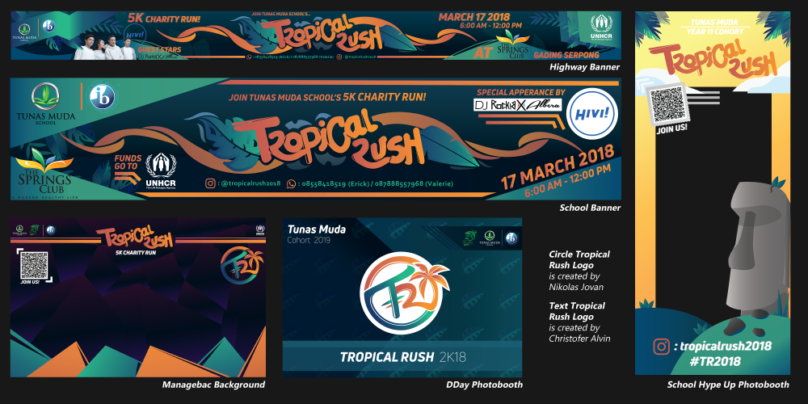
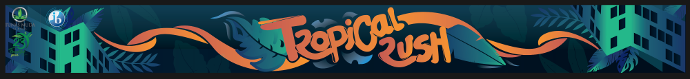
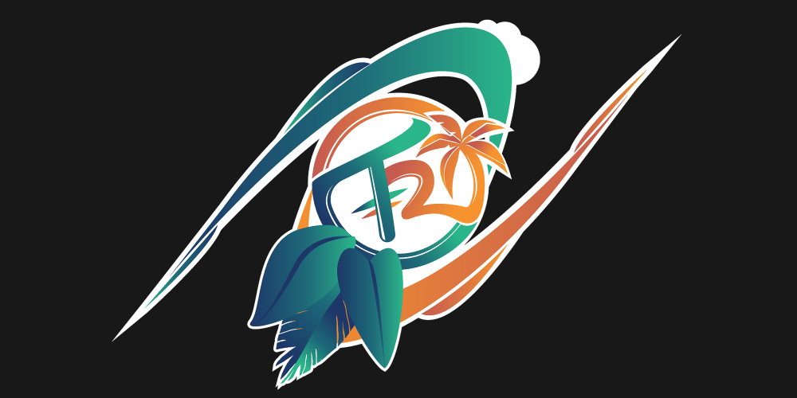

Various banners, prints and backgrounds I did for the Tropical Rush event.
Overview
Tropical Rush is a charity event that my batch did for our high school’s requisite CAS Project. The event is a 5K running event where the earnings will be donated to UNHCR. Various students were given various jobs, such as organizers, media designers, registration, décor, finances and much more.

The base design for the Tropical Rush banners that are printed, digital banners are handled by Jovan.
Responsbilities
Throughout Tropical Rush, I was part of the media publication team, working on Banners, photobooths and miscellaneous designs under the wings of Nikolas Jovan (he is a great friend and a mentor for illustrator).
Banners that I have made were placed on the highway, replacing the school’s usual old banner and also on various parts of the school.
I worked on backgrounds that is featured on the school’s Managebac (a learning management system heavily used by my high school).
I also worked on various photobooths, one on the school to hype up the event, and also one for the final event, as well as the stage backdrop.
The Tropical Rush logo has gone through many renditions, but in the end, Jovan’s design was used.

A combination between Jovan's idea and my idea for the logo. Used as the backdrop for the HIVI stage on the DDay.
Various Challenges
Tropical Rush was genuinely my first time delving into illustrator, photoshop and media design but ultimately in the end, I really enjoyed it.
I learnt the program to various harsh nights, with the help of Jovan, till my parents are really mad that I put more effort in trying to do the media tasks rather than my school tasks.
There were also tons of ideas I had and I wanted to do but I lacked the skill to do beforehand. 2018 me isn’t able to imagine 3D spaces as effectively as I can now and is still struggling in picking up where to put details where to not put them. I guess I improved my tastes since then.